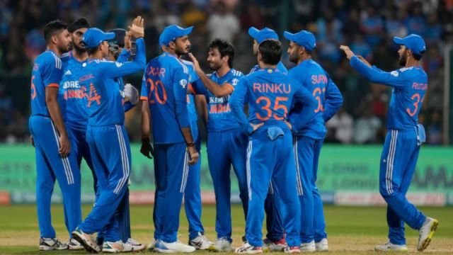

Team India to play three match T20I and ODI series against Sri Lanka
in Pallekele and Colombo

The Board of Control for Cricket in India (BCCI) has announced the
schedule for India’s tour of Sri Lanka. The Men in Blue will tour
the island nation and play a three-match T20I series followed by a
three-match ODI series. The series will start on 27th July with a
T20I game in Pallekele and will conclude on August 7th in Colombo
which will host the third ODI.
Mitchell Starc opens up on Rohit Sharma’s brutal assault vs
Australia in T20 World Cup: ‘I bowled 5 bad balls, he hit them all
for six’

Among the crucial performances for India on their road to the T20
World Cup win was captain Rohit Sharma’s blistering knock of 92
against Australia in the Super-8. An innings that saw Rohit take
Mitchell Starc to the cleaners for 29 runs in one over. Opening up
on the match for the first time, Starc has shared what he made of
the Indian skipper. “I’ve played a lot against him. He had a good
tournament, especially in our game. I think he targeted that wind in
St. Lucia as well. If you look at the runs from each end, one end
went for a lot more than the other. I bowled from that end. I bowled
five bad balls and he hit them all for six,” the Aussie pacer said
on the Willow Talk Cricket podcast.
Paolini beats Vekic to reach 2nd consecutive Grand Slam final at
Wimbledon

Jasmine Paolini reached her second consecutive Grand Slam final with
a 2-6, 6-4, 7-6 (8) victory over unseeded Donna Vekic at Wimbledon
on Thursday in a rollicking match that lasted 2 hours, 51 minutes,
making it the tournament's longest women's semifinal on record.
Paolini kept coming back after dropping the opening set, after being
two games from defeat at 4-all in the second, after twice trailing
by a break in the third at 3-1 and 4-3.
Gautam Gambhir appointed coach of India cricket team, Djokovic irked by Wimbledon crowd
Former India opener Gautam Gambhir expressed his gratitude after being appointed as the new Head Coach of the Indian Cricket Team by the BCCI on Tuesday. Vastrakar's 4/13, Mandhana's unbeaten 54 set up India's series-levelling T20I win over SA. 'You guys can't touch me,' says Djokovic to 'abusive' fans at Wimbledon